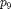
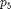
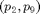
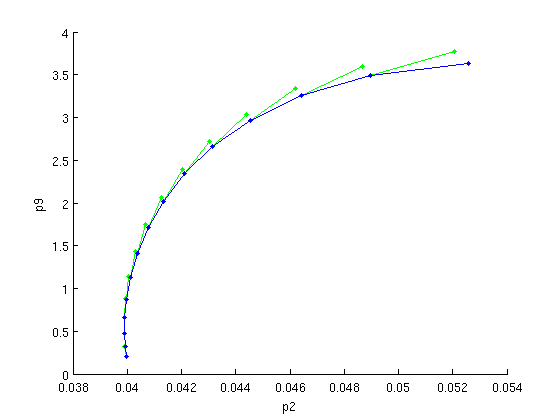

Contents
Detection and continuation of Hopf bifurcations
The eigenvalues of the linearized system along branches of equilibria indicate potential bifurcations. In this demo complex conjugate pairs of eigenvalues cross the imaginary axis, corresponding to Hopf bifurcations. The demo will proceed to continue two of these Hopf bifurcations in two system parameters and . This part requires to run sd_demo_stst.html first
% (c) DDE-BIFTOOL v. 3.1.1(20), 11/04/2014
%#ok<*ASGLU,*NOPTS,*NASGU>
Detection and correction of Hopf point on branch of equilibria
We select point 5 and turn it into an (approximate) Hopf bifurcation point. Then we correct the Hopf-like point using appropriate method parameters and one free parameter ().
hopf=p_tohopf(funcs,branch1.point(5)); % select a point and turn into hopf guess method=df_mthod(funcs,'hopf'); % get hopf calculation method parameters [hopf,success]=p_correc(funcs,hopf,5,[],method.point) % correct Hopf
hopf =
kind: 'hopf'
parameter: [1x11 double]
x: [5x1 double]
v: [5x1 double]
omega: 0.5497
success =
1
Creation of initial piece of Hopf bifurcation branch
In order to follow a branch of Hopf bifurcations in the two parameter space  we again need two starting points. We use the Hopf point already found and one perturbed in and corrected in , to start on a branch of Hopf bifurcations. Finally, we continue the branch, see figure below.
branch2=df_brnch(funcs,[2 9],'hopf'); branch2.parameter.min_bound(1:2,:)=[[2 -1]' [9 -1]']'; % lower and branch2.parameter.max_bound(1:2,:)=[[2 10]' [9 10]']'; % upper bound for p2 branch2.parameter.max_step(1:2,:)=[[2 1]' [9 1]']'; % max step for perdictor in p2 branch2.point=hopf; % first point on branch hopf.parameter(9)=hopf.parameter(9)+0.1; % perturb Hopf point [hopf,success]=p_correc(funcs,hopf,2,[],method.point); % correct 2nd Hopf point branch2.point(2)=hopf; % and use as 2nd point of Hopf branch figure(3); clf; [branch2,s,f,r]=br_contn(funcs,branch2,14); % continue with plotting Hopf branch xlabel('p2');ylabel('p9');
Figure: Hopf bifurcation in two parameters
Predictions and corrections in the -plane after computation of a branch of Hopf bifurcations.
Save and move on to continuation and stability of periodic orbits
save results and continue with periodic orbits in sd_demo_psol.html
save('sd_demo_hopf');